Lviv University
Plimpton 322 tablet (1800 BC)
Data shapes
Origins of databases
Business data processing performed on mainframe computers in the 1960s and ’70s:
History outline
Information Management System (IBM)
Originally released in 1968, developed for stock keeping of the Apollo space program.
Represented all data as a tree of records nested within records.
Conference on Data Systems Languages (CODASYL, 1969)
Bachman diagram
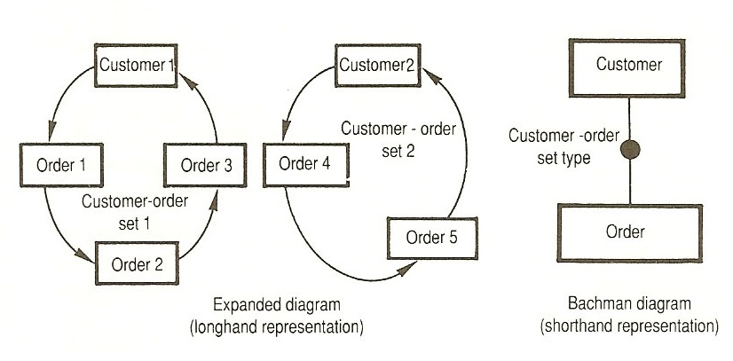
Edgar Codd. A Relational Model of Data for Large Shared Data Banks (1970)
A usable database management system should hide all the physical complexity from the user and expose instead a simple, clean model. This model should be based on tables, which gave birth to the relational model and the relational algebra.
Data independence
Data independence - the independence of application programs and terminal activities from growth in data types and changes in data representation.
Logical view on the data is cleanly separated, decoupled, from its physical storage.
Logical model
A relational database management system (RDBMS) exposes this logical model, together with logical building blocks for manipulating it, on top of a physical layer.
Thus, 2 layers:
In relational model, logical view is a table.
RDBMS as a stack
Definitions
A relation \(R\) on a family of sets \((A_i)_{i=1,n}\) is a subset of their Cartesian product: \(R \subseteq A_1 \times \ldots \times A_n\).
A partial function between two sets \(A\) and \(B\) is a relation that associates to each element of \(A\) at most one element of \(B\): \[ \forall (x_A, x_B), (y_A, y_B) \ in p: x_A = y_A \Rightarrow x_B = y_B \]
The set of all partial functions from \(A\) to \(B\) is denoted as \(A \mapsto B\).
The subset of \(A\) with the elements that do get associated to an element of \(B\) is denoted \(support(p)\): \[ support(p) = \left\{a \in A: \exists b \in B, p(a)=b\right\} = p^{-1}(B). \]
Set definitions
\(\mathbb{S}\) is a set of all strings.
\(\mathbb{V}\) is a set of all possible values. Contains anything that can be stored on persistent storage or in memory as a sequence of 0s and 1s and according to a convention to interpret these bits.
Set definitions
\(\mathbb{A} \subset \mathbb{V}\) – the set that contains all atomic values. Atomic values are values that are not structured, i.e., this excludes:
but only includes:
and so on.
Set definitions
The table itself, which can be seen as a collection of records. A synonym is a collection.
The attribute, which is a property that records can have.
The row, which is a record in a collection. A row associates properties with the values applicable for the record it represents. Synonyms of row are:
The primary key, which is a particular attribute or set of attributes that uniquely identify a record in its table.
Table definition
Expressed formally, given a family of attributes \((A_i)_{1\leq i \leq n}\) and their associated domains \[ (Domain(A_i))_{1\leq i \leq n} \] a table \(T\) is a relation over these domains, i.e. \[ T \subseteq Domain(A_1) \times Domain(A_2) \times \ldots \times Domain(A_n) \]
Table definition
A collection of records is a set of partial functions from \(\mathbb{S}\) to \(\mathbb{V}\). We denote the set of collections as \(\mathcal{C}\): \[ \mathcal{C} = \mathcal{P}(\mathbb{S} \mapsto \mathbb{V}) \] Each record is thus modelled as a partial function mapping strings to values. 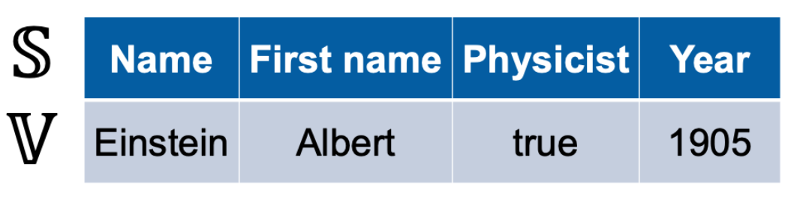
Table definition
A table is a collection with three constraints:
Relational integrity
A collection T fulfils relational integrity if all its records have identical support: \[ \forall t, u \in T : support(u) = support(t) \] Common support is a property of the table and contains the attributes of the table \(T\): \(Attributes_T\).
The extension of the table, sometimes denoted \(Extension_T\) is its actual content, which is \(T\) itself.
No relational integrity
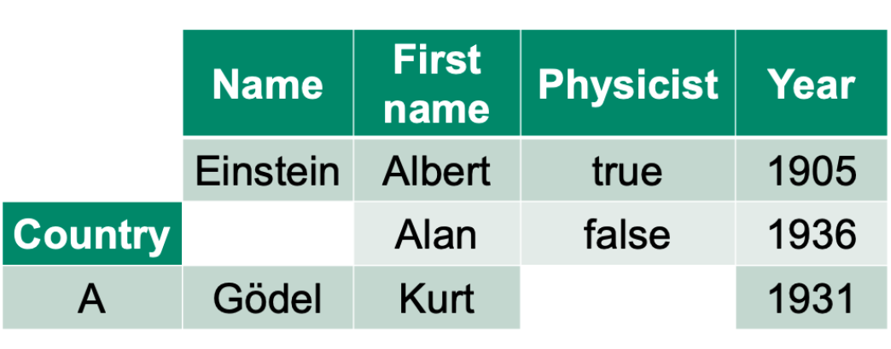
With relational integrity
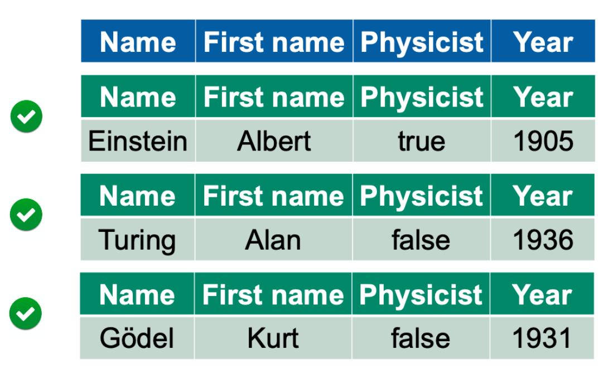
Domain integrity
A collection \(T\) fulfils domain integrity if the values associated with each attribute are restricted to a domain.
We define these domains with a function \(D\) mapping strings (the attributes) to domains (unused attributes are just associated with empty domains, i.e. this does not need to be a partial function): \[ D \in \mathcal{P}(\mathbb{V})^\mathbb{S} \]
A collection \(T\) fulfils the domain integrity constraint specified by \(D\) if, for each row, the values are in the specified domains: \[ \forall t \in T, \forall a \in support(t): t.a \in D(a) \]
Note: domain integrity still allows missing values.
Schema
Domain mapping \(D\) is called a schema.
Schema contains:
No domain integrity
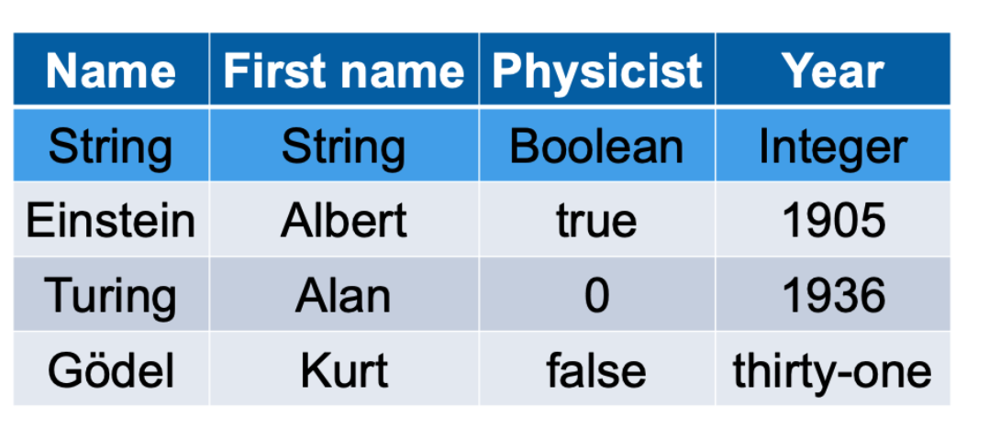
With domain integrity
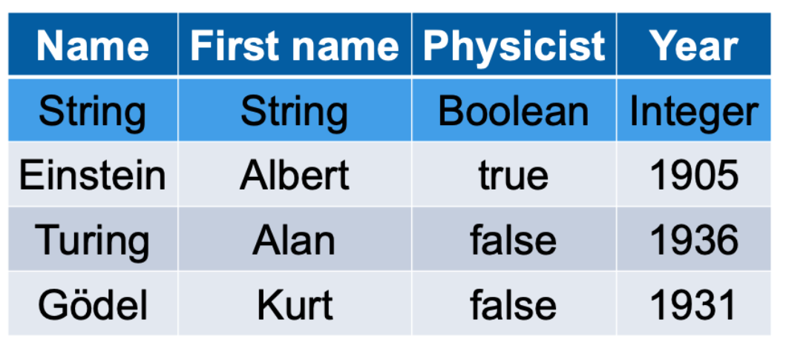
Atomic integrity
A collection \(T\) fulfils the atomic integrity constraint if the values used in it are only atomic values, i.e. \[ T \subseteq \mathbb{S} \mapsto \mathbb{A} \]
This means that the collection does not contain any nested collections or sets or lists or anything that has a structure of its own: it is flat.
No atomic integrity
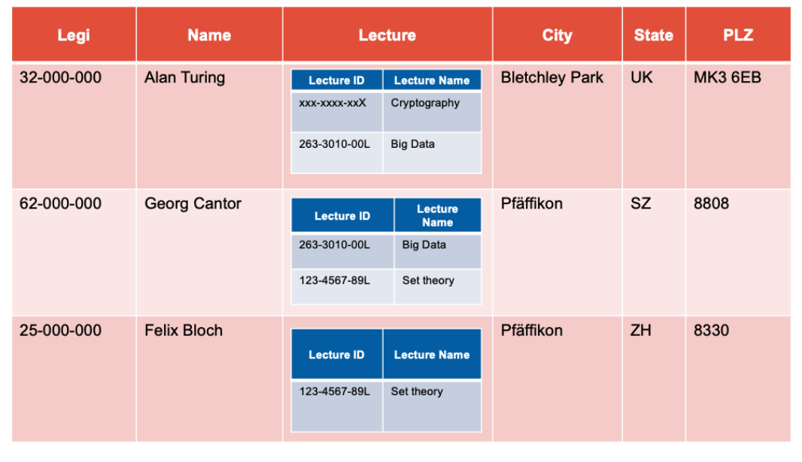
With atomic integrity
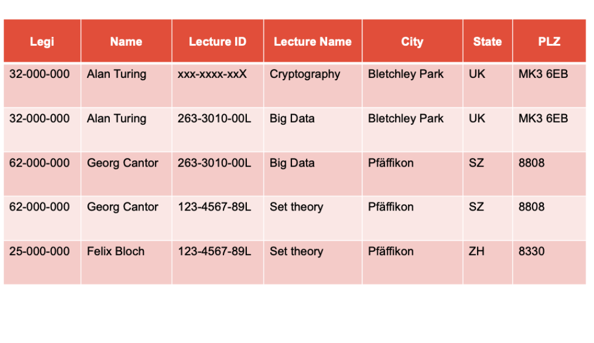
Relational algebra: a framework for manipulating relational tables
Queries
Selection
A selection takes a subset of the records belonging to the table, taking a parameter, which is a predicate on the attributes.
The notation used is the \(\sigma\) letter. \[ S = \sigma_{B \leq 2}(R) \] 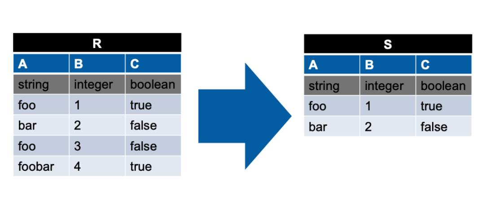
Projection
A projection keeps all records, but removes columns specified in the parameter list.
The notation used is the \(\pi\) letter: \[ S = \pi_{A,C}(R) \] 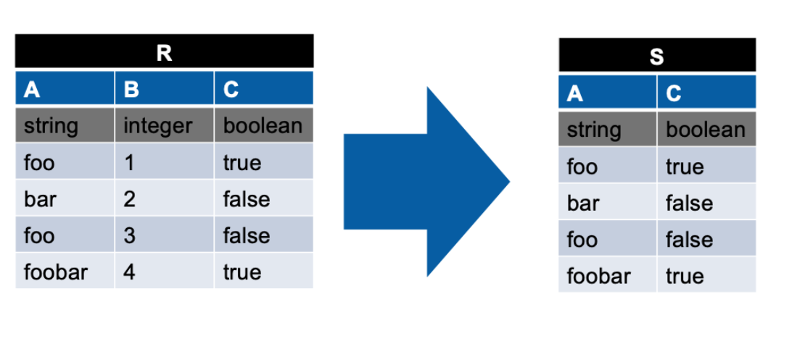
Grouping
A grouping, also called aggregation, merges records by grouping on some attributes, and aggregating on all others.
The notation used is the \(\gamma\) letter: \[ S = \gamma_{G,SUM(A) \rightarrow A}(R) \] This groups by \(G\) and aggregate the values in column \(A\) (within the same group) with a sum
Note: there are grouping and non-grouping attributes.
Examples: COUNT, SUM, MAX, MIN, AVERAGE.
Relational grouping
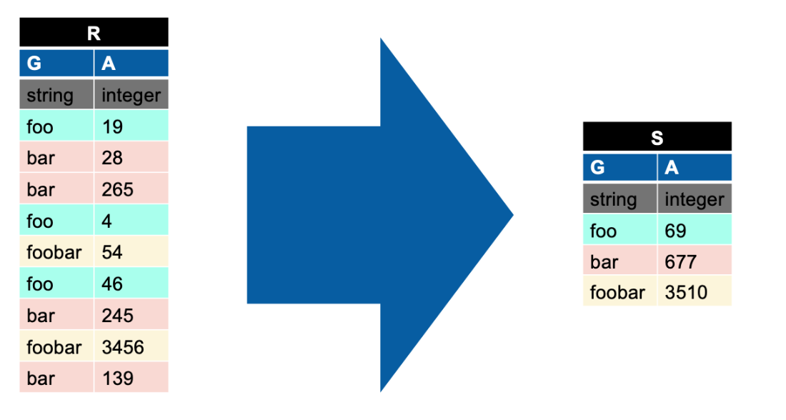
Renaming
Rename a column from \(A\) to \(D\): \[ S = \rho_{A \rightarrow D}(R) \]
Joins
A natural join is a filtered Cartesian product in which we only combine directly related tuples and omit all other non-matching pairs. The notation used is the \(\bowtie\) symbol: \[ T= R \bowtie S \] joins \(R\) and \(S\) but only keeps records that coincide on the attributes common to both sides.
Joins are computationally more expensive than projections or selections.
Relational join
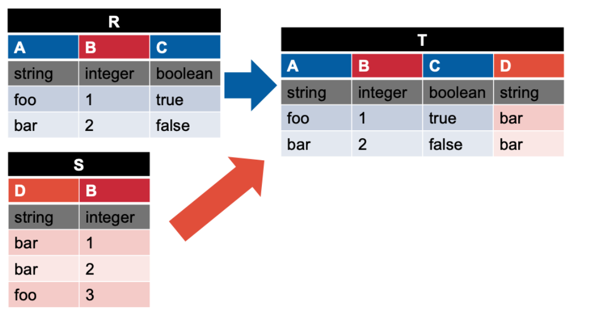
Other joins
Normal forms
Normal forms help to address inconsistencies:
Key idea behind of normalization
Removal of duplication.
Downsides
Transactions
ACID guarantees:
Limitations
Alternatives
| Issue | Solution |
|---|---|
| Lots of rows | Object storage |
| Lots of rows | Distributed File Systems |
| Lots of nesting | Syntax |
| Lots of rows/columns | Column storage |
| Lots of nesting | Data models |
| Lots of rows | Massive Parallel Processing |
| Lots of nesting | Document Stores |
| Lots of nesting | Querying |
Drivers for change
Modern systems
Challenges
Definition
CAP: presented as a conjecture by Eric Brewer at the 2000 Symposium on Principles of Distributed Computing and formalized and proven by Gilbert and Lynch in 2002.
CAP (Brewer’s) theorem
You can have only two of the above.
Comparison
Example
{"user_id": 251,
"first_name": "Bill",
"last_name": "Gates",
"summary": "Co-chair of the Bill and Melinda Gates... Active blogger.",
"education": [
{"school_name": "Harvard University", "start": 1973, "end": 1975},
{"school_name": "Lakeside School, Seattle", "start": null, "end": null}
],
"contact_info": {
"blog": "http://thegatesnotes.com",
"twitter": "http://twitter.com/BillGates"
}
}Pros
Cons
Schemas
Document DBs are not schemaless. They are schema-on-read.
Relational DBs are schema-on-write.
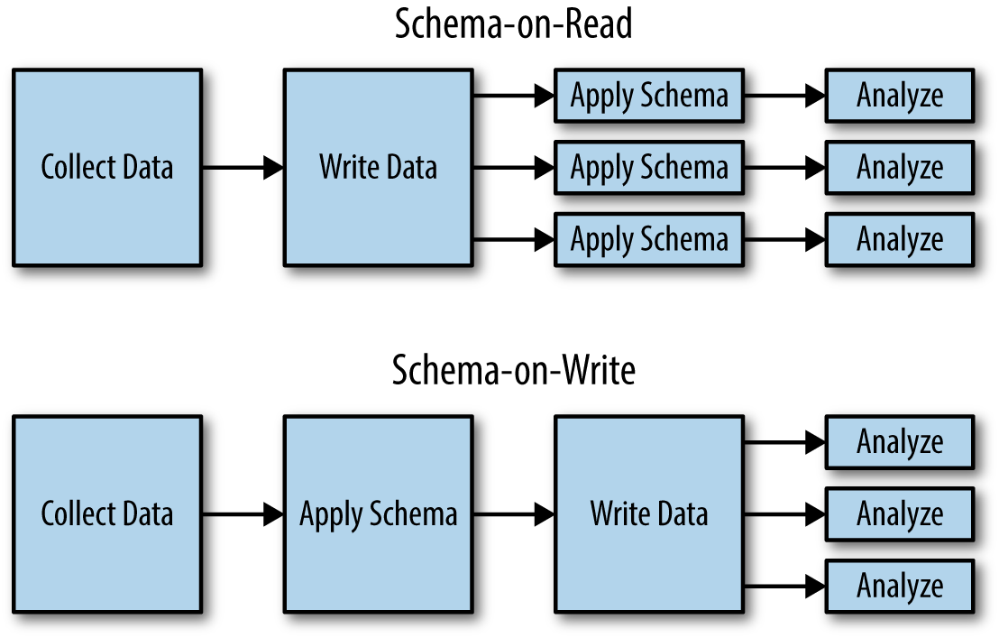
Hybrids: JSON support in RDBMS
Hybrids: joins support in document DBs
Features
Property graphs (Neo4J, Titan, InfiniteGraph)
Vertices:
Edges:
Property graph as a pair of relational tables
CREATE TABLE vertices (
vertex_id integer PRIMARY KEY,
properties json
);
CREATE TABLE edges (
edge_id integer PRIMARY KEY,
tail_vertex integer REFERENCES vertices (vertex_id),
head_vertex integer REFERENCES vertices (vertex_id),
label text,
properties json
);
CREATE INDEX edges_tails ON edges (tail_vertex);
CREATE INDEX edges_heads ON edges (head_vertex);Triple stores (Datomic, AllegroGraph)
All information is stored in the form of very simple three-part statements: (subject, predicate, object):
Datalog
This is a generalized version of triple-store model: predicate(subject, object)